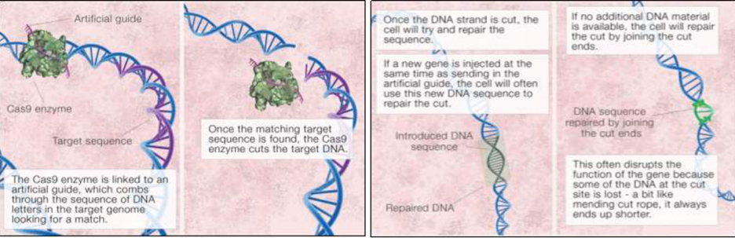
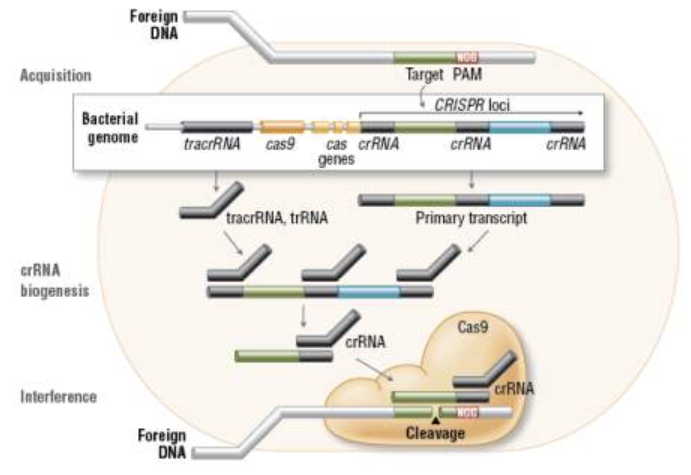
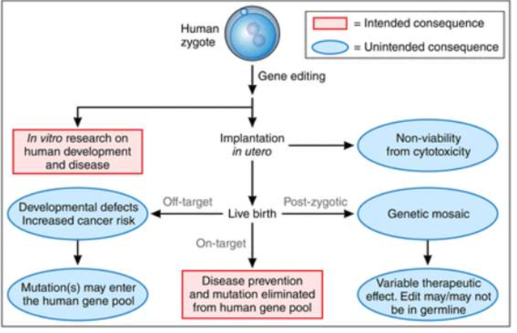

CRISPR-Cas9 (Clustered Regularly Interspaced Short Palindromic Repeats - associated protein-9 nuclease) is the second gene editing technique, and because it is quick, inexpensive, and simple, it is being researched and improved at a rapid rate (Liu et al., 2019). (Liu et al., 2019) confirmed that the functionality of CRISPR genes enables organisms to recognise, react to, and reduce invasive genetic material. By providing evidence that S. thermophiles integrates a virus genome fragment into the CRISPR locus and subsequently develops resistance, these genes' crucial roles in adaptive immunity have been uncovered and proven (Liu et al., 2019). These bacteria exhibited the capacity to defend themselves against infection by slicing DNA, storing virus fragments from prior infections, and using the CRISPR enzyme to source and cut the virus DNA (Jinek et al., 2012). (Crossley, 2018). CRISPR requires the enzyme to locate the DNA sequence target utilising guide RNA in order to modify the DNA sequence (See Figure 2). (Crossley, 2018). This search sequence directs the Cas9 enzyme to the desired editing spot and causes the DNA strand to be cut there. The DNA will then patch the gap with any more DNA that is present or rejoin the ends of the cut fragment while leaving the deleted region (Crossley, 2018).
Figure 2: CRISPR Mechanism(Crossley, 2018)
There are numerous recognised varieties of CRISPR mechanisms, as shown in Figure 3. Due to the few components that are needed, Type 2 is the most straightforward, making it an exciting system for study because it may be used for genome editing (Reis et al., 2019). Cas9, crRNA, and partially complementary trRNA are needed for type 2 CRISPR. Cas9 proteins are necessary for gene silencing and work with crRNA to destroy targeted DNA (Reis et al., 2019). First, as observed during the acquisition step, the foreign DNA is incorporated into the bacterial genome. Additionally, the CRISPR loci will undergo transcription to be converted into crRNA by crRNA biogenesis (Reis et al., 2019). The interference step, which uses the Cas9 endonuclease, crRNA, and tracrRNA to cleave the foreign DNA, will then start (Reis et al., 2019). This DNA will have a complementary and nearby 20-bp segment called the PAM sequence.
Figure 3: CRISPR-Cas9: Bacterial Adaptative Immunity
While somatic gene editing only affected the patient receiving treatment, germline editing affects every cell in an organism, including eggs and sperm, and is therefore affecting current and future generations genetically (The Guardian, 2015). Germline editing is the trans-generational correction or complete avoidance of single-gene diseases. The greatest serious dispute in the world is being caused by a procedure that involves extensive Germline editing and manipulation (The Guardian, 2015). This technology has the capacity to alter reproductive cells, such as sperm, eggs, or embryos, with long-term consequences for each subsequent generation of those cells (The Guardian, 2015). This opens up the field of genetically modified humans for research, and the moral, health, and legal ramifications of this research are hotly contested both within and outside of the scientific community (The Guardian, 2015). In a recent article published in the journal Nature, molecular researcher Jennifer Doudna of the University of California warned that this method "may have substantial ramifications for permanently altering the human DNA" (The Guardian, 2015).
In 2014, a Chinese research centre at the University of Sun Yat-Sen published an essay that was largely unsuccessful as the first known instance of the application of germline editing (Centre for Genetics and Society, 2016). The study described how non-viable human embryos were modified using CRISPR technology to alter a gene linked to beta-thalassemia (Centre for Genetics and Society, 2016). (US National Library of Medicine, 2019). Despite the report not producing the desired outcomes, as a result of this, the technology was improved, made more affordable, accurate, and user-friendly (Centre for Genetics and Society, 2016). Due to these quick and promising advancements, the germline debate has reached its pinnacle in 2019 (Nature Research, 2019). (US National Library of Medicine, 2019). To lessen the catastrophic repercussions that this technology has the potential to produce, regulation and rules governing research must be put in place (US National Library of Medicine, 2019).
There is a common belief that performing cures and medicines on living people is unethical if the precise outcome cannot be foreseen (Lanphier et al., 2015). Germline gene editing has an impact on either the sperm, egg, or zygote cells, which eventually have an effect on future generations. The general public is gravely concerned that this technology will be utilised for non-therapeutic enhancing objectives (Caplan, Parent, Shen & Plunkett, 2015). This brings up the debate about "designer babies" that has been going on for the past ten years (Lanphier et al., 2015). Some nations have outright banned the use of technologies like CRISPR to alter germline genes because the ethical, legal, and safety concerns make it impossible to even consider doing so (Caplan, Parent, Shen & Plunkett, 2015). While germline gene editing may be employed in an enhancement fashion, it may also be used for the greater benefit of reducing the debilitating effects of genetic illnesses. It is crucial to keep in mind that there must be a trigger and cause for any research being conducted (Lanphier et al., 2015). The goal of research is to develop medications, cures, preventative measures, or therapies that will enhance these patients' wellbeing and quality of life (Lanphier et al., 2015).
It is generally acknowledged that germline gene editing technology has the potential to fix disease-causing mutations to stop the onset of diseases and/or hereditary disorders, even if this technology is still in its theoretical infancy. Theoretically, this might lead to the full eradication and rectification of genetic flaws in the gene pool, so benefiting all present and future generations. The modification of germline genes would lead to modified genomes entering the human gene pool. Figure 4 presents some ethical problems and alarms that are brought up by this modification, which tries to eradicate harmful mutations (Kohn et al., 2016).
Figure 4: CRISPR-Cas9: Gene editing consequence on zygotes (Kohn et al., 2016)
Germline gene editing has a wide range of unexpected outcomes. First off, gene editing may directly cause cytotoxicity, leading to the non-viability of the human zygote (Kohn et al., 2016). Additionally, off target editing (as was previously mentioned in respect to somatic gene editing) may have unforeseen repercussions including developmental flaws and higher cancer risks (Kohn et al., 2016). These off-target mutations will infiltrate the gene pool and cause serious issues (Kohn et al., 2016). The genetic abnormality becoming homozygous in subsequent offspring could be caused by off targeting editing or genotoxicity (Kohn et al., 2016). Additionally, the genetic mosaic during post-zygotic stages may result in hetero-cellular gene change (Kohn et al., 2016). Since the initial response to the technique might be favorable, it is crucial to comprehend the undesirable and unanticipated effects of germline gene editing in order to have a complete grasp of the technology. This initial favorable response would be brought on by the potentially effective novel medicines that could result from in vitro research, particularly with gene editing on zygotes.